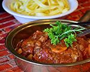

Våra Favoriter
Valnötspesto

En krämig och smakrik pesto som passar perfekt till pasta.
Osso Buco
En klassisk italiensk gryta med kalvlägg och tomater.
Krämig Kycklingpasta
En snabb och enkel pasta med kyckling och en krämig sås.
Snabba Tacos
En snabb och enkel tacorätt med färska grönsaker och kryddig fyllning.